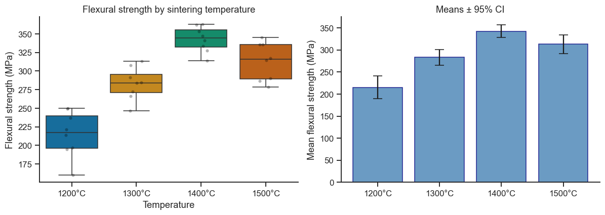
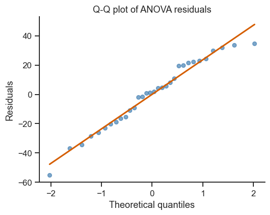
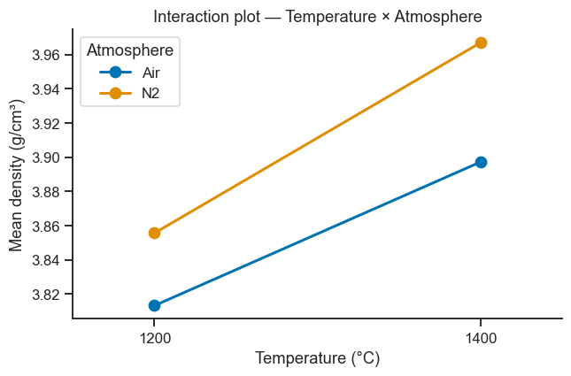

9. Analysis of Variance (ANOVA)#
ANOVA extends the two-sample t-test to comparing three or more groups.
It partitions the total variation in the data into components attributable
to the factors and residual error.
Topics
One-way ANOVA — single factor
Post-hoc tests — Tukey HSD
Assumptions — normality, equal variances
Two-way ANOVA — two factors with interaction
Case study: sintering atmosphere and temperature on ceramic density
import numpy as np
import pandas as pd
import matplotlib.pyplot as plt
import seaborn as sns
from scipy import stats
import statsmodels.api as sm
from statsmodels.formula.api import ols
from statsmodels.stats.multicomp import pairwise_tukeyhsd
sns.set_theme(style='ticks', palette='colorblind')
plt.rcParams.update({'figure.dpi': 110, 'font.size': 11})
rng = np.random.default_rng(55)
9.1 One-Way ANOVA#
Question: Does the sintering temperature significantly affect the flexural strength of Al₂O₃ ceramics?
With four temperature groups, running six separate pairwise t-tests would both be tedious and inflate the false-alarm rate. ANOVA instead asks one combined question at once: “are the differences between these four group averages bigger than the natural scatter we see within each group?” — see Section 3 of the theory page for exactly how that comparison is built from a sum-of-squares decomposition.
# Flexural strength (MPa) at 4 sintering temperatures — 8 replicates each
T_labels = ['1200°C', '1300°C', '1400°C', '1500°C']
T_means = [220, 275, 340, 310]
n_rep = 8
sigma = 20 # within-group std
groups = {label: rng.normal(mu, sigma, n_rep)
for label, mu in zip(T_labels, T_means)}
# Build long-form DataFrame
rows = []
for label, vals in groups.items():
rows.extend({'Temperature': label, 'Strength_MPa': v} for v in vals)
df = pd.DataFrame(rows)
# Descriptive stats
print(df.groupby('Temperature')['Strength_MPa'].agg(['mean','std','count']).round(2))
mean std count
Temperature
1200°C 215.38 30.71 8
1300°C 283.13 21.75 8
1400°C 342.73 17.14 8
1500°C 312.95 25.23 8
# One-way ANOVA with scipy
F, p = stats.f_oneway(*[groups[t] for t in T_labels])
print(f'\nOne-way ANOVA: F = {F:.4f}, p = {p:.6f}')
if p < 0.05:
print('→ Reject H₀: at least one temperature group differs significantly (α=0.05)')
# Manual ANOVA table (educational)
all_data = df['Strength_MPa'].values
grand_mean = all_data.mean()
k = len(T_labels)
N = len(all_data)
SS_between = sum(len(g) * (g.mean() - grand_mean)**2 for g in groups.values())
SS_within = sum(((g - g.mean())**2).sum() for g in groups.values())
SS_total = SS_between + SS_within
df_between = k - 1
df_within = N - k
MS_between = SS_between / df_between
MS_within = SS_within / df_within
F_manual = MS_between / MS_within
anova_table = pd.DataFrame({
'Source': ['Between groups', 'Within groups (error)', 'Total'],
'SS': [SS_between, SS_within, SS_total],
'df': [df_between, df_within, N-1],
'MS': [MS_between, MS_within, ''],
'F': [F_manual, '', ''],
'p': [p, '', ''],
})
print('\nANOVA table:')
print(anova_table.to_string(index=False))
One-way ANOVA: F = 40.5211, p = 0.000000
→ Reject H₀: at least one temperature group differs significantly (α=0.05)
ANOVA table:
Source SS df MS F p
Between groups 71311.202071 3 23770.40069 40.521143 0.0
Within groups (error) 16425.282459 28 586.617231
Total 87736.484530 31
Take-home message
F=40.5 means the between-group variability is about 40 times the within-group (noise) variability — a huge signal-to-noise ratio, which is why p is printed as 0.000000 (in reality some tiny nonzero number below display precision) rather than merely “small.”
Read the ANOVA table as a variance budget: of the total 87,736 (SS Total), 71,311 (about 81%) is explained by which temperature group a specimen belongs to, leaving only 16,425 (19%) as unexplained within-group scatter — sintering temperature is clearly the dominant driver of strength here, not measurement noise.
MS (between) ÷ MS (within) = 23,770 ÷ 587 = 40.5 is exactly the F above — the whole test is just “average explained variance” divided by “average unexplained variance,” compared against how big that ratio could plausibly be by chance alone (the F-distribution, Notebook 7 §7.3).
This F-test only says some group differs — not which. That is exactly what Tukey’s HSD below is for.
fig, axes = plt.subplots(1, 2, figsize=(11, 4))
# Box plot
sns.boxplot(data=df, x='Temperature', y='Strength_MPa', hue='Temperature', ax=axes[0],
order=T_labels, palette='colorblind', legend=False)
sns.stripplot(data=df, x='Temperature', y='Strength_MPa', ax=axes[0],
order=T_labels, color='black', alpha=0.3, size=4)
axes[0].set_title('Flexural strength by sintering temperature')
axes[0].set_ylabel('Flexural strength (MPa)')
sns.despine(ax=axes[0])
# Means ± 95% CI
means = [groups[t].mean() for t in T_labels]
ci_half = [stats.t.ppf(0.975, n_rep-1) * groups[t].std(ddof=1)/np.sqrt(n_rep)
for t in T_labels]
axes[1].bar(T_labels, means, yerr=ci_half, capsize=6,
color='steelblue', edgecolor='navy', alpha=0.8)
axes[1].set_ylabel('Mean flexural strength (MPa)')
axes[1].set_title('Means ± 95% CI')
sns.despine(ax=axes[1])
plt.tight_layout()
plt.show()

9.2 Post-Hoc Testing: Tukey HSD#
A significant ANOVA tells you some groups differ — but not which ones. It’s tempting to just run a t-test on every pair, but testing many pairs inflates the false-alarm rate (the more comparisons you make, the more likely something looks “significant” purely by chance). Tukey’s HSD (Honestly Significant Difference) compares all pairs while adjusting the threshold to keep the overall, family-wise false-alarm rate at the stated level (5% here) — the correct way to ask “which specific pairs differ?” after an ANOVA has already told you “something differs.”
tukey = pairwise_tukeyhsd(endog=df['Strength_MPa'], groups=df['Temperature'], alpha=0.05)
print(tukey)
# Compact letter display (manual interpretation)
print('\nGroups sharing a letter are NOT significantly different:')
tukey_df = pd.DataFrame(data=tukey._results_table.data[1:],
columns=tukey._results_table.data[0])
print(tukey_df[['group1','group2','meandiff','p-adj','reject']].to_string(index=False))
Multiple Comparison of Means - Tukey HSD, FWER=0.05
======================================================
group1 group2 meandiff p-adj lower upper reject
------------------------------------------------------
1200°C 1300°C 67.7525 0.0 34.6882 100.8168 True
1200°C 1400°C 127.3475 0.0 94.2832 160.4118 True
1200°C 1500°C 97.5729 0.0 64.5086 130.6372 True
1300°C 1400°C 59.595 0.0002 26.5306 92.6593 True
1300°C 1500°C 29.8204 0.0884 -3.2439 62.8847 False
1400°C 1500°C -29.7746 0.0891 -62.8389 3.2897 False
------------------------------------------------------
Groups sharing a letter are NOT significantly different:
group1 group2 meandiff p-adj reject
1200°C 1300°C 67.7525 0.0000 True
1200°C 1400°C 127.3475 0.0000 True
1200°C 1500°C 97.5729 0.0000 True
1300°C 1400°C 59.5950 0.0002 True
1300°C 1500°C 29.8204 0.0884 False
1400°C 1500°C -29.7746 0.0891 False
Take-home message
Read
meandiffas “group2 mean minus group1 mean” andreject=Trueas “this specific pair differs at the family-wise 5% level” — e.g. 1200°C vs 1400°C differ by 127.3 MPa, a huge, unambiguous gap.Not every pair is distinguishable: 1300°C vs 1500°C (p-adj=0.088) and 1400°C vs 1500°C (p-adj=0.089) are both
reject=False. Despite 1400°C having the highest sample mean numerically (342.7 MPa), the data cannot statistically distinguish it from 1300°C or 1500°C.Practical conclusion: strength clearly rises from 1200°C to 1300°C to 1400°C, but pushing all the way to 1500°C is not proven to help further (the sample means even hint at a possible decline) — more replicates at the top end would be needed to say more.
This is the payoff promised in Section 9.2’s introduction: one omnibus F-test said “something differs”; Tukey’s six pairwise comparisons — with the family-wise error rate still held at 5% — say specifically which four of those six pairs.
9.3 ANOVA Assumptions Check#
# 1. Equal variances (Levene's test)
W, p_lev = stats.levene(*[groups[t] for t in T_labels])
print(f'Levene\'s test: W={W:.4f}, p={p_lev:.4f}')
print(' →', 'Equal variances assumed (OK)' if p_lev > 0.05 else 'Unequal variances — consider Welch ANOVA')
# 2. Normality of residuals (Shapiro-Wilk)
model = ols('Strength_MPa ~ C(Temperature)', data=df).fit()
residuals = model.resid
W_sw, p_sw = stats.shapiro(residuals)
print(f'\nShapiro-Wilk on residuals: W={W_sw:.4f}, p={p_sw:.4f}')
print(' →', 'Residuals appear normal (OK)' if p_sw > 0.05 else 'Non-normal residuals — check data')
# Q-Q plot of residuals
fig, ax = plt.subplots(figsize=(5, 4))
(osm, osr), (slope, intercept, r) = stats.probplot(residuals, dist='norm')
ax.plot(osm, osr, 'o', color='steelblue', alpha=0.7, ms=5)
x_line = np.array([osm.min(), osm.max()])
ax.plot(x_line, slope*x_line+intercept, 'r-', lw=2)
ax.set_xlabel('Theoretical quantiles')
ax.set_ylabel('Residuals')
ax.set_title('Q-Q plot of ANOVA residuals')
sns.despine(ax=ax)
plt.tight_layout()
plt.show()
Levene's test: W=0.8894, p=0.4587
→ Equal variances assumed (OK)
Shapiro-Wilk on residuals: W=0.9662, p=0.4009
→ Residuals appear normal (OK)

Take-home message
Both checks pass (Levene p=0.46, Shapiro-Wilk p=0.40): the equal-variance and normality assumptions the one-way ANOVA above relies on both hold, so the F-test and Tukey results already reported can be trusted at face value — no Welch-ANOVA or data transformation needed here.
These checks logically belong before trusting the ANOVA’s conclusion, even though the code runs them after for narrative convenience — a significant F-test built on badly violated assumptions would not be trustworthy no matter how small its p-value looked.
9.4 Two-Way ANOVA with Interaction#
Question: How do sintering temperature (1200/1400°C) and atmosphere (air/nitrogen) affect the density of a ceramic part — and do they interact?
This is the same “interaction” idea from Part V’s factorial designs, now analysed with the ANOVA machinery: three separate questions are tested at once — does temperature matter on its own, does atmosphere matter on its own, and does the combination matter beyond what each explains separately? A significant interaction means “the effect of temperature depends on which atmosphere you’re in,” which is exactly what the non-parallel lines in the interaction plot below would show.
# Full factorial 2×2 design, 6 replicates per cell
T_vals = [1200, 1400]
atm_vals = ['Air', 'N2']
effects = {(1200,'Air'): 3.80, (1200,'N2'): 3.84,
(1400,'Air'): 3.90, (1400,'N2'): 3.97} # interaction!
n_rep = 6
rows = []
for T in T_vals:
for atm in atm_vals:
dens = rng.normal(effects[(T, atm)], 0.015, n_rep)
rows.extend({'Temperature': T, 'Atmosphere': atm, 'Density': d}
for d in dens)
df2 = pd.DataFrame(rows)
# Two-way ANOVA with statsmodels
model2 = ols('Density ~ C(Temperature) * C(Atmosphere)', data=df2).fit()
anova2 = sm.stats.anova_lm(model2, typ=2)
print('Two-way ANOVA table (Type II SS):')
print(anova2.round(4))
Two-way ANOVA table (Type II SS):
sum_sq df F PR(>F)
C(Temperature) 0.0572 1.0 214.1965 0.0000
C(Atmosphere) 0.0189 1.0 70.6577 0.0000
C(Temperature):C(Atmosphere) 0.0011 1.0 4.2055 0.0536
Residual 0.0053 20.0 NaN NaN
Take-home message
Read each row as its own yes/no test: Temperature (PR(>F)<0.0001) and Atmosphere (PR(>F)<0.0001) both matter on their own — changing either one shifts density by far more than chance alone would explain.
The interaction row,
C(Temperature):C(Atmosphere), sits right at the edge: p=0.054, just above the conventional 0.05 cutoff — technically “not significant,” but only barely. That is a genuine borderline case, not a clean yes/no: with only 6 replicates per cell the data hint at an interaction (nitrogen’s benefit looks slightly larger at 1400°C than at 1200°C) without quite proving it. A p-value this close to the line is itself useful information — it says “run a few more replicates before deciding,” not “there is definitely no interaction.”Because both factors are categorical with 2 levels here, the
sum_sqcolumn has a direct physical reading: temperature’s 0.057 dwarfs atmosphere’s 0.019 — within this experiment, temperature moves density roughly three times more than atmosphere does, useful for deciding which lever to prioritise in a follow-up study.
# Interaction plot
means_2way = df2.groupby(['Temperature', 'Atmosphere'])['Density'].mean().reset_index()
fig, ax = plt.subplots(figsize=(6, 4))
for atm, grp in means_2way.groupby('Atmosphere'):
grp_sorted = grp.sort_values('Temperature') # ensure left→right order
ax.plot(grp_sorted['Temperature'], grp_sorted['Density'],
'o-', lw=2, ms=8, label=atm)
ax.set_xlabel('Temperature (°C)')
ax.set_ylabel('Mean density (g/cm³)')
ax.set_title('Interaction plot — Temperature × Atmosphere')
ax.legend(title='Atmosphere')
ax.set_xticks([1200, 1400])
ax.set_xlim(1150, 1450)
sns.despine(ax=ax)
plt.tight_layout()
plt.show()
print('\nIf lines are non-parallel → interaction is present.')

If lines are non-parallel → interaction is present.
Take-home message
The two lines lean non-parallel — nitrogen’s advantage over air looks larger at 1400°C than at 1200°C — but only mildly, visually consistent with the p=0.054 interaction term above: a hint of an interaction, not a slam dunk.
Trust the ANOVA table’s p-value over eyeballing the plot alone: “non-parallel by eye” is subjective, while the F-test quantifies exactly how surprising that much non-parallel-ness would be under pure chance. A strong interaction would show clearly crossing or sharply fanned-out lines instead of this near-miss.
Exercises#
Kruskal-Wallis test: The one-way ANOVA requires normality. Run a Kruskal-Wallis test (
scipy.stats.kruskal) on the same flexural strength data from section 9.1 and compare the p-value with the ANOVA result.Effect size (η²): The effect size for ANOVA is \(\eta^2 = SS_{\text{between}} / SS_{\text{total}}\). Compute \(\eta^2\) for the one-way ANOVA from section 9.1. How large is the effect?
Unbalanced design: Add two extra measurements to the 1400°C group in the one-way example (making it unbalanced). Re-run the ANOVA. Does the result change? For an unbalanced one-way design there is only one factor, so Type I/II/III SS all agree — the real choice matters for unbalanced designs with more than one factor (like Section 9.4’s two-way case): use Type II SS if the interaction isn’t significant (it tests each main effect assuming no interaction, and has more power), and Type III SS if the interaction is significant and you want to test each main effect’s marginal contribution regardless. “Unbalanced” alone doesn’t automatically mean “use Type III.”